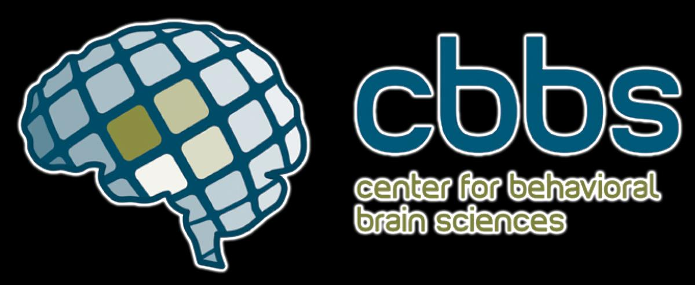
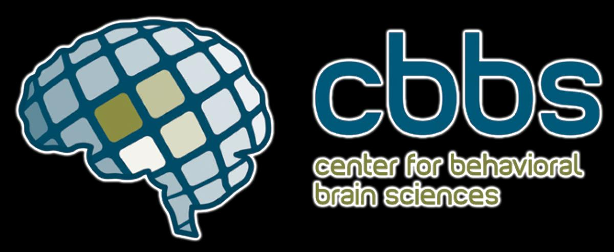
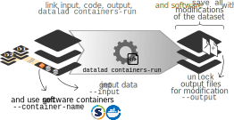

An introduction to DataLad
üë©‚Äçüíªü뮂Äçüíª
with a focus on ML application
Adina Wagner
 @AdinaKrik
@AdinaKrik |
|
|
Psychoinformatics lab,
Institute of Neuroscience and Medicine, Brain & Behavior (INM-7) Research Center Jülich |
Slides: https://github.com/datalad-handbook/course/
Acknowledgements
|
Funders


 

Collaborators
|
Resources and Further Reading
|
Comprehensive user documentation in the DataLad Handbook (handbook.datalad.org) |
|
 |
|
 |
|
 |
|
Resources and Further Reading
- Specifically relevant handbook sections to ML:
- DataLad ML example:
handbook.datalad.org/r.html?ml-usecase - DataLad versus DVC comparison: handbook.datalad.org/r.html?dl-for-ml
- Not-text-based resources:
- DataLad Youtube channel with talks and tutorials
Questions/interaction
Live polling system
- A command-line tool, available for all major operating systems (Linux, macOS/OSX, Windows)
- Build on top of Git and Git-annex
- Allows...
- ... version-controlling arbitrarily large content,
- ... transport mechanisms for sharing and obtaining data,
- ... (computationally) reproducible data analysis,
- ... and much more
- Completely domain-agnostic
Core concepts & features
Everything happens in DataLad datasets

Dataset = Git/git-annex repository
- content agnostic
- no custom data structures
- complete decentralization
- Looks and feels like a directory on your computer:

 File viewer and terminal view of a DataLad dataset
File viewer and terminal view of a DataLad dataset
version control arbitrarily large files

- Non-complex DataLad core API (easy for data management novices)
- Pure Git or git-annex commands (for regular Git or git-annex users, or to use specific functionality)
Stay flexible:
Use a datasets' history

- reset your dataset (or subset of it) to a previous state,
- revert changes or bring them back,
- find out what was done when, how, why, and by whom
- Identify precise versions: Use data in the most recent version, or the one from 2018, or...
Consume and collaborate

machine-readable, re-executable provenance

Seamless nesting and dataset linkage

Third party integrations

DataLad Basics
DataLad Datasets
- DataLad's core data structure
- Dataset = A directory managed by DataLad
- Any directory of your computer can be managed by DataLad.
- Datasets can be created (from scratch) or installed
- Datasets can be nested: linked subdirectories
Experience a DataLad dataset
Code to follow along: handbook.datalad.org/en/latest/code_from_chapters/01_dataset_basics_code.htmlLocal version control
Procedurally, version control is easy with DataLad!

Advice:
- Save meaningful units of change
- Attach helpful commit messages
Summary - Local version control
datalad createcreates an empty dataset.- Configurations (-c yoda, -c text2git) are useful (details soon).
- A dataset has a history to track files and their modifications.
- Explore it with Git (git log) or external tools (e.g., tig).
datalad saverecords the dataset or file state to the history.- Concise commit messages should summarize the change for future you and others.
datalad download-urlobtains web content and records its origin.- It even takes care of saving the change.
datalad statusreports the current state of the dataset.- A clean dataset status is good practice.
Questions!
Consuming datasets

- Datasets are light-weight: Upon installation, only small files and meta data about file availability are retrieved.
- Content can be obtained on demand via
datalad get.
Dataset nesting

Summary - Dataset consumption & nesting
datalad cloneinstalls a dataset.- It can be installed “on its own”: Specify the source (url, path, ...) of the dataset, and an optional path for it to be installed to.
- Datasets can be installed as subdatasets within an existing dataset.
- The --dataset/-d option needs a path to the root of the superdataset.
- Only small files and metadata about file availability are present locally after an install.
- To retrieve actual file content of larger files,
datalad getdownloads large file content on demand. datalad statuscan report on total and retrieved repository size- using
--annexand--annex alloptions. - Datasets preserve their history.
- The superdataset records only the version state of the subdataset.
Questions!
Git versus Git-annex
- Data in datasets is either stored in Git or git-annex
- By default, everything is stored in git-annex
| Git | git-annex |
| handles small files well (text, code) | handles all types and sizes of files well |
| file contents are in the Git history and will be shared upon git/datalad push | file contents are in the annex. Not necessarily shared |
| Shared with every dataset clone | Can be kept private on a per-file level when sharing the dataset |
| Useful: Small, non-binary, frequently modified, need-to-be-accessible (DUA, README) files | Useful: Large files, private files |
Git versus Git-annex
Useful background information for demo later. Read this handbook chapter for detailsGit and Git-annex handle files differently: annexed files are stored in an annex. File content is hashed & only content-identity is committed to Git.
- Files stored in Git are modifiable, files stored in Git-annex are content-locked
- Annexed contents are not available right after cloning, only content- and availability information (as they are stored in Git)
|
|

|
Git versus Git-annex
-
When sharing datasets with someone without access to the same computational
infrastructure, annexed data is not necessarily stored together with the rest
of the dataset.

-
Transport logistics exist to interface with all major storage providers.
If the one you use isn't supported, let us know!
Git versus Git-annex
-
Users can decide which files are annexed:
- Pre-made run-procedures, provided by DataLad (e.g.,
text2git,yoda) or created and shared by users (Tutorial at handbook.datalad.org) - Self-made configurations in
.gitattributes(e.g., based on file type, file/path name, size, ...) - Per-command basis (e.g., via
datalad save --to-git)
Questions!
reproducible data analysis

Code to follow along: handbook.datalad.org/en/latest/code_from_chapters/10_yoda_code.html
Basic organizational principles for datasets
- Keep everything clean and modular
 |
|
- do not touch/modify raw data: save any results/computations outside of input datasets
- Keep a superdataset self-contained: Scripts reference subdatasets or files with relative paths
Basic organizational principles for datasets
- Record where you got it from, where it is now, and what you do to it

- Document everything:
A classification analysis on the iris flower dataset


Reproducible execution & provenance capture
datalad run

Computational reproducibility
- Code may fail (to reproduce) if run with different software
- Datasets can store (and share) software environments (Docker or Singularity containers) and reproducibly execute code inside of the software container, capturing software as additional provenance
- DataLad extension:
datalad-container
datalad-containers run
Summary - Reproducible execution
datalad runrecords a command and its impact on the dataset.- All dataset modifications are saved - use it in a clean dataset.
- Data/directories specified as
--inputare retrieved prior to command execution. - Use one flag per input.
- Data/directories specified as
--outputwill be unlocked for modifications prior to a rerun of the command. - Its optional to specify, but helpful for recomputations.
datalad containers-runcan be used to capture the software environment as provenance.- Its ensures computations are ran in the desired software set up.
datalad reruncan automatically re-execute run-records later.- They can be identified with any commit-ish (hash, tag, range, ...)
Questions!
A machine-learning example
Code to follow along: handbook.datalad.org/en/latest/code_from_chapters/usecase_ml_code.htmlAnalysis layout
|
 Imagenette dataset
Imagenette dataset
|
Tips and tricks for ML applications
- Standalone input datasets keep input data extendable and reusable
- Subdatasets can be registered in precise versions, and updated to the newest state
- Software containers aid greatly with reproducibility
- The correct software environment is preserved and can be shared
- Re-executable run-records can capture all provenance
- This can also capture command-line parametrization
- Git workflows can be helpful elements in ML workflows
- DataLad is no workflow manager, but by checking out out tags or branches one can switch easy and fast between results of different models
Questions!
More useful information
(But please ask if there's anything else you want to know)
Scalability
-
How large can datasets get?
- In general: Size is not a problem, as long as large files are handled with git-annex
- Bottle-neck: Number of files. 100-200k per dataset!
- How to scale up? Nest datasets as subdatasets
- Currently largest dataset: human connectome project data, 80TB, 15 million files, ~4500 subdataset
- Currently in the making: institute archival system, 125TB
- Currently worked towards: Processing UKBiobank data, 0.5PB
Need more information? Read the chapter on scaling up at handbook.datalad.org
Transfer existing projects
-
Can existing projects become dataset?
- In general: Yes (but make a backup, just in case)
datalad create -fcan transform any directory or Git repository into a dataset- Afterwards, untracked contents need to be saved
Need more information? Read the section on transitioning existing projects to DataLad at handbook.datalad.org
Easy storage for annex
-
How can I share annexed data fast and easy?
- In general: Dozens of services are supported via git-annex "special remote" concept, (Amazon S3, Dropbox, GDrive, private webserver...)
- Some repository hosting services also host annexed data: GIN (free, supports anonymous read access), GitHub & GitLab if used with GitLFS (non-free)
- datalad-osf extension for hosting datasets on the open science frameworf (OSF)
Need more information? Read the chapter on third party infrastructure at handbook.datalad.org
Thanks for your attention!
- Speak up now or reach out to us later with any questions